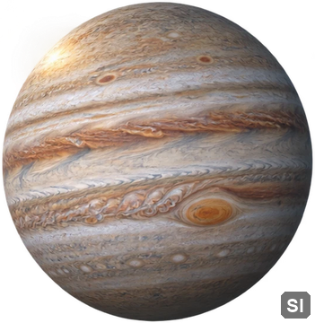
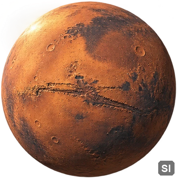
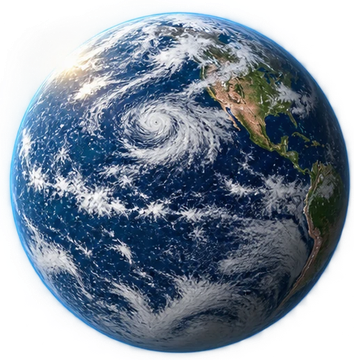
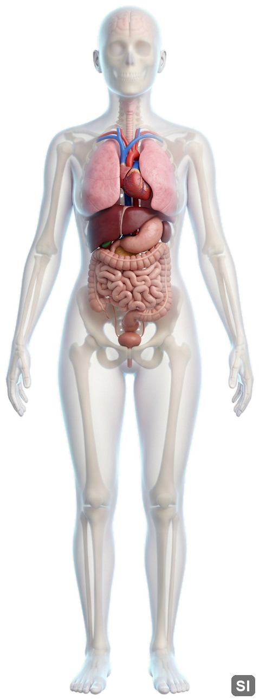
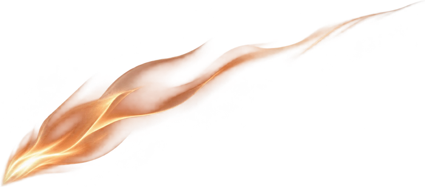
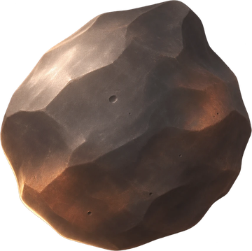
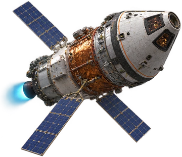
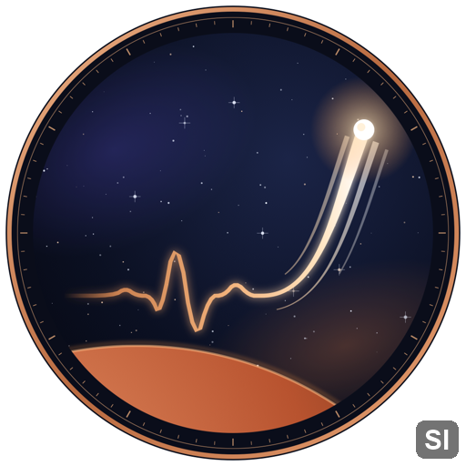
A health companion for astronauts on long missions. It helps the crew read their own body, act early, and know when to call the flight surgeon.
A message to Earth takes 3 to 22 minutes one way, so the crew has to notice changes in their own body first. NASA’s Human Research Program groups the risks into five hazards.
DNA damage, cancer and nervous-system risk
Poorer sleep, low mood, crew tension
No quick evacuation, delayed medical advice
Bone loss of 1–1.5% a month, muscle loss, vision changes
CO₂ headaches, microbes, immune changes
Wearable sync, typed readings and the camera: blood pressure, heart rate, glucose, temperature, sleep, mood, SpO₂, dose.
Each value is checked against the astronaut’s own pre-flight baseline and coloured green, amber or red.
One attention card says what to do next and why: re-measure, train, rest, or shelter from radiation.
Chest pain or a vision change goes straight into a report for the flight surgeon, sent in the next comms window.
Try it live: celestasoft.health → Log in → Demo astronaut
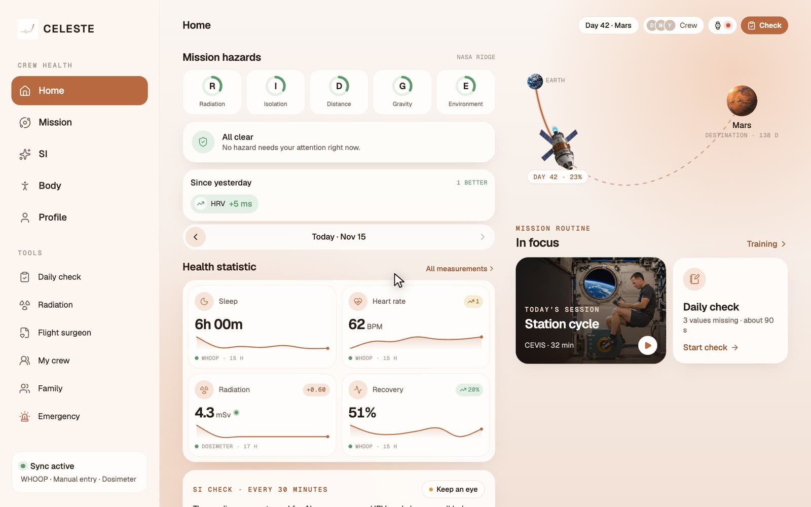
1 · Home screenHome shows the five NASA hazards and the one thing that needs attention today.
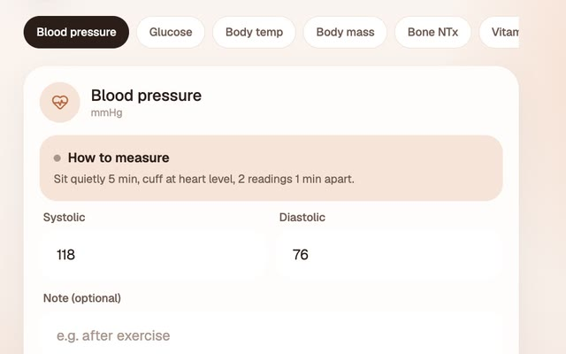
The wearable fills in sleep and heart rate; you add blood pressure. About 90 seconds.
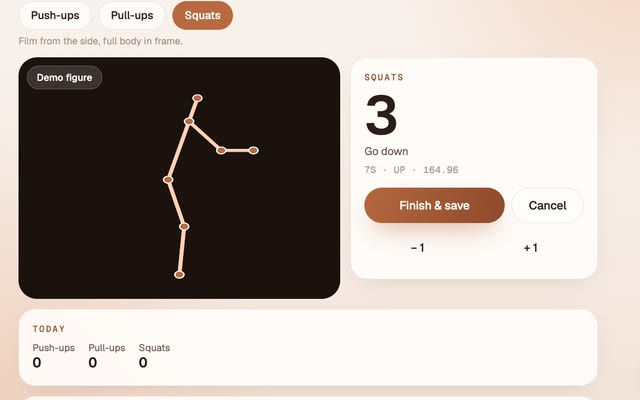
The camera counts squats and checks your form, right on the device.
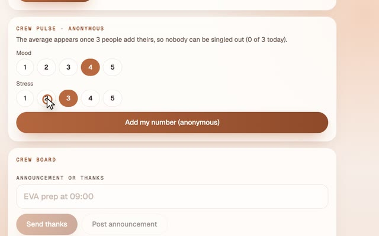
Anonymous crew pulse, concerns and calls to crewmates.
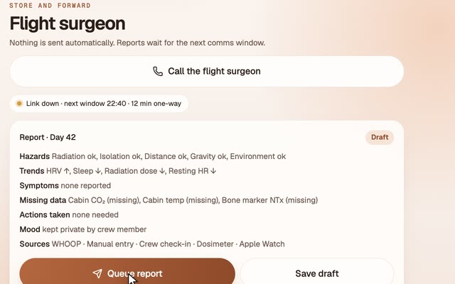
One tap queues a report for the flight surgeon’s next comms window.
→ the hazard map every reading feeds
→ which indicators matter and when to escalate
→ live solar flares, CMEs and particle events on the Radiation page
→ the training plan, with NASA public-domain photos
→ research context in Body, being added
Personal dose first, space weather as context
How bodies change in orbit and why exams matter
Recovery, sleep, HRV and heart rate sync automatically
One codebase for iPhone and the web
Accounts, health engine, store-and-forward queue
Coding partner for the app and this deck
Space artwork and the glass body model
NextStreaks and mission patches for daily checks, and NASA OSDR Inspiration4 values in Body.
BP, heart rate, glucose, temperature, sleep, mood, SpO₂, dose
Attention card with the next step and a “Why?”
Typing, taps, camera rep counter and face scan
Body explorer with six body systems
Every signal feeds one of the five RIDGE hazards
Red symptoms always escalate; reports queue offline
Station, Moon, Mars, Jupiter: comms delay adapts
Daily check, today’s training session, next EVA
7-day sparklines, 4-week activity, risk timeline
Green, amber, red against your own baseline
Each metric: what it is, why it matters in space, how to measure
Weekly training ring today; streaks come next
Ashurov Bahrom · Kurbanov Muhammadali